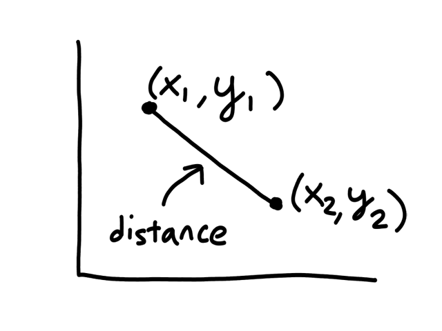

Shortcut to this page: ntrllog.netlify.app/ml
Notes provided by Professor Mohammad Pourhomayoun
Machine learning is using a set of algorithms that can detect and extract patterns from data to make predictions on future data. The process of detecting and extracting patterns from data is called training (this is the "learning" in "machine learning"). A machine learning model is trained so that the model can make predictions on future data. The data used to train the model is called the training data and the data used to make predictions is called the testing data.
There are many different types of machine learning algorithms and this page will explore how some of them work.
Let's say we took the time to scour a website and collect some weather data for Los Angeles.
| Humidity (%) | Temperature (°F) | Sunny/Rainy |
| 42 | 97 | Sunny |
| 43 | 84 | Sunny |
| 44 | 68 | Rainy |
| 94 | 54 | Rainy |
| 51 | 79 | Sunny |
| 91 | 61 | Rainy |
| 39 | 84 | Sunny |
| 47 | 95 | Sunny |
| 96 | 55 | Rainy |
| 90 | 84 | Rainy |
| Humidity (%) | Temperature (°F) | Sunny/Rainy |
| 60 | 84 | Sunny |
| 61 | 79 | Sunny |
| 61 | 68 | Rainy |
| 92 | 55 | Rainy |
| 26 | 77 | Sunny |
| 92 | 61 | Rainy |
| 54 | 81 | Sunny |
| 62 | 72 | Sunny |
| 94 | 61 | Rainy |
| 93 | 59 | Rainy |
It's easy to notice that sunny days (red) are mostly in the top left and rainy days (blue) are mostly in the bottom right. Now let's say someone gives us the temperature (86°F) and humidity (59%) for a day and we have to guess whether it was rainy or sunny on that day (our lives depend on it!).
The temperature and humidity that the person gave us is plotted in green. Since it seems to be in red territory, we can guess that it was sunny on that day. 😎
This is the basic idea behind KNN classification. For any point that we are trying to figure out, we look at the points that are closest to it (neighbors) to see what it is similar to. We assume that data points for a particular result share the same characteristics. For example, sunny days tend to have high temperatures and low humidity while rainy days tend to have low temperatures and high humidity.
So looking at a point's neighbors allows us to make some guesses about that point. But how many neighbors do we need to look at, i.e., what should the value of `k` be?
Using just 1 neighbor (`k=1`) is not a good idea.
The green data point is actually a sunny day, but let's pretend we didn't know whether it was rainy or sunny. If we looked at just 1 of its closest neighbors, we would think it was rainy. But if we look at, say, 5 of its closest neighbors, then the story changes.
It's now closer to more sunny days than rainy days, so we would then correctly guess that it was sunny.
Having more neighbors can also lessen the impact of outliers. For example, the left-most blue point (44% humidity, 68°F) could be considered an outlier since it is a rainy day with low humidity. But if we were to guess a random point in that general area (for example (40% humidity, 80°F)), it would be closer to more sunny days than rainy days so that outlier doesn't really affect the outcome.
Using more neighbors seems to be better since our decision is based on more information. So should we just use a ton of neighbors everytime?
Let's suppose we only had information for 14 days instead of 20 and that significantly more of the days were sunny than rainy. The green point (80% humidity and 70°F) is unknown and we're trying to figure out whether it is rainy or sunny. Given its characteristics (low temperature and high humidity), it looks like it should be rainy.
Using 1, 2, 3, 4, or 5 neighbors, we do see that it is closer to more rainy days than sunny days.
However, look what happens when we start using more than 6 neighbors.
Now it is "closer" to more sunny days than rainy days. And it will stay this way even as we use more neighbors. This happened because the dataset was unbalanced (there were significantly more sunny days than rainy days in the dataset), so using more neighbors introduced a bias towards the more popular label.
So there is the possibility of using too few neighbors or too many neighbors. However, picking the right number of neighbors reliably is best done through trial and error.
So far, we have just been looking at the graph to see which points were neighbors to a given point. But computers can't "see" graphs, so they need to actually calculate the distance between each pair of points to see which of them has the shortest distance. (The points with the shortest distance to the given point are its neighbors.)
The formula for calculating the distance between 2 points `(x_1,y_1), (x_2,y_2)` is
`sqrt((x_1-x_2)^2+(y_1-y_2)^2)`
So to find the nearest neighbor of a given point, the computer has to calculate the distance between it and all the other points in the dataset. Then it sorts the distances to find the top `k` shortest distances. From this point of view, using a small number of neighbors makes things faster because there are less distances to calculate and sort.
Advantages of using a large `k`:
Advantages of using a small `k`:
A subtle thing to note about the weather data is that the scale of the units (percentage and degrees) was roughly similar. They both can theoretically range from 0-100. This is a good thing because there are some side effects of using units that aren't on a similar scale as each other.
To highlight this, we take a look at another dataset, which is completely made-up.
| Size (square feet) | Number of Bedrooms | Sold/Not Sold |
| 3000 | 1 | Sold |
| 4000 | 2 | Not Sold |
| 5000 | 3 | Sold |
| 6000 | 4 | Not Sold |
| 7000 | 5 | Not Sold |
The size of a house and the number of bedrooms it has are on completely different scales, with size in the thousands and number of bedrooms ranging from 1-5. So when we calculate distances between points, the number of bedrooms has a negligible impact on the distance. Consider this distance:
`sqrt((3000-4000)^2+(1-2)^2)`
`= sqrt((-1000)^2+(-1)^2)`
`= sqrt(1,000,000+1)`
and this distance:
`sqrt((3000-7000)^2+(1-5)^2)`
`= sqrt((-4000)^2+(-4)^2)`
`= sqrt(16,000,000+16)`
1,000,000 and 16,000,000 are really big numbers, so there's not much of a difference if we add 1 or 16 to them. This means that the effect of considering the number of bedrooms is practically negligible (we would get pretty much the same answer even if we didn't include the number of bedrooms in the calculation). It's like a millionaire finding a 20-dollar bill on the ground.
If the number of bedrooms is practically negligible, then KNN will — effectively — just look at the size of the house to predict whether or not it will be sold, which isn't what we want because we know the number of bedrooms should also have a significant impact. (🎵 Why you got a 12 car garage? 🎵) To prevent this, we can normalize the data so that the units are on the same scale.
One way to normalize data is to make the units on a scale from 0 to 1. We can do this by dividing each data point by the max value for that feature. In the housing dataset, the max size of a house is 7000 and the max number of bedrooms is 5, so we divide each size by 7000 and each number of bedrooms by 5.
| Size (square feet) [normalized] | Number of Bedrooms [normalized] | Sold/Not Sold |
| 0.4 | 0.2 | Sold |
| 0.6 | 0.4 | Not Sold |
| 0.7 | 0.6 | Sold |
| 0.9 | 0.8 | Not Sold |
| 1 | 1 | Not Sold |
The two distances calculated previously now become:
`sqrt((0.4-0.6)^2+(0.2-0.4)^2)`
`= sqrt((-0.2)^2+(-0.2)^2)`
`= sqrt(0.04+0.04)`
and:
`sqrt((0.4-1)^2+(0.2-1)^2)`
`= sqrt((-0.6)^2+(-0.8)^2)`
`= sqrt(0.36+0.64)`
Now the number of bedrooms has an impact on the distance.
Advantages of KNN:
Disadvantages of KNN:
Now we take a turn (but not into an iceberg) and look at people on the Titanic. Or at least 891 of them anyway. Green means the person survived and red means they didn't.
There are some negative ages, which means that the ages for those people are unknown.
There are some clear patterns in the data. For example, females had a higher survival chance than males did and younger (male) children had a higher survival chance than older (male) adults. #BirkenheadDrill. So if we chose a random person on the Titanic and tried to guess if they survived or not, a good start would be looking at age and gender. If they were female, they probably survived. If they were young, they probably survived. Of course, there were several males who survived and several older people who survived, but classifying based on gender and age is better than random guessing in this case.
We could also look at how fancy they were. The lower the number, the fancier. (🎵 We flyin' first class... 🎵)
There's also a clear pattern here. Higher-class passengers tended to survive while lower-class passengers didn't. So in addition to looking at age and gender, we could also use passenger class to predict whether a randomly-chosen person on the Titanic survived or not. #PayToWin. Also, the same age pattern kind of appears here, more so for class 2 and 3.
Another feature there is data for is how many parents or children each passenger was travelling with. So if someone has a value of 3, then they could've been travelling with their parents and child or their three children.
This time, there's not really a clear pattern. There's neither an increasing nor decreasing trend as we move between levels, i.e., the chance of survival for those travelling with 3 family members looks about the same as the chance of survival for those travelling with 2 or 1 family members. So looking at the number of family members someone was travelling with doesn't give us a good idea of survival chance.
So some useful features we found are age, gender, and passenger class, all of which we could use to predict whether someone survived or not. This could be represented using a tree, where first we check gender, then passenger class, then age.
Many things with this tree are arbitrary. Like which features to check and in what order. And what age to use as a threshold (e.g., 4). This tree is based on the manual visual analysis we did earlier, but how do we do this systematically (so that we can create a tree for any dataset) and reliably (so that the tree is actually able to predict correct results)?
First, we have to find out which features are important and which ones aren't. But what does "important" mean? In this case, a feature is important if it provides a good amount of information. For example, age, gender, and passenger class are important because they are all able to tell us whether a passenger survived. The number of family members is not important because it told us nothing about survival chance. But does age give us more information than gender? Or does gender give us more information than passenger class? We need a way to measure information.
There are two important concepts about information. The first is: the amount of information about an event has an inverse relationship to the probability of that event happening. This means that events that are likely to happen don't surprise us while events that don't happen often give us a lot of information. For example, "the sun will rise in the morning" doesn't give us a lot of information because we already know this will happen. However, "an eclipse will occur tomorrow" is news to us because it doesn't happen that often.
For an event `x`, the concept can be represented mathematically as
`I(x) prop 1/(p(x))`
where `I(x)` represents the amount of information of `x` and `p(x)` is the probability of `x` happening.
The second important concept about information is: when two independent events happen, the joint probability of them is the product of their probabilities and the total information about them is the sum of their information.
For example, there is a `1/2` chance of flipping a coin and getting heads and there is a `1/2` chance of flipping a coin and getting tails. So the probability of getting a head on the first flip and then a tail on the second flip is `1/2*1/2=1/4`. Getting a head and getting a tail are two independent events because the result of the coin flip does not depend on what happened in the past flips.
Let's say a coin is flipped twice, but we don't know the results of the two flips. If we ask about the first flip, then we get `1` piece of information. If we ask about the second flip, then we get another `1` piece of information. So then we would have `1+1=2` pieces of information.
Let `p_1` be the probability of one (independent) event happening and `p_2` be the probability of another (independent) event happening. Let `I` be a function that represents the amount of information learned from an event happening. Then the information from these two events happening (`I(p_1 cdot p_2)`) is the sum of their information (`I(p_1)+I(p_2)`).
`I(p_1 cdot p_2)=I(p_1)+I(p_2)`
So if there was a way to measure information, then it would have to turn products into sums. Luckily, the log function does just that.
Log properties:
So a function that measures the information of an event should calculate the log of the probability of that event. Also, the amount of information about an event has an inverse relationship to the probability of that event happening (the first concept). Both of these lead to the formulation of the information function:
`I(x)=log(1/(p(x)))=-log(p(x))`
There's a term for the amount of information we don't know. Entropy. It measures the amount of "uncertainty" of an event. That is, if an event occurred, how certain can we be that we will know the results of that event? If we're not really sure what the outcome will be, then there is high entropy. If we're certain enough to bet money on the outcome, then there is low entropy.
Another interpretation of entropy is that it represents expected information. When an event has occurred, then we "expect" to receive some information from the result. This is why the formula for entropy (denoted as `H`) is the expected value (denoted as `E`) of the information:
`H(X) = E(I(X)) = sum_(x in chi) p(x) cdot I(x)`
`= -sum_(x in chi)p(x)log(p(x))`
where `chi` represents all the possible outcomes for event `X`
Typically entropy uses log base 2, in which case the unit of measurement is 'bits' (8 bits = 1 byte). When the entropy is measured in bits, the interpretation is that it takes that many bits to inform someone of the outcome. For example, an entropy of 0 means that no bits are required to convey information (because the probability of that event happening was 1 so we didn't need to make space to store that information). An entropy of 1 means that 1 bit is required to convey the outcome. In the case of a coin flip, heads can be encoded as 1 and tails can be encoded as 0. Either result would require 1 bit to store it.
1 is the maximum value for entropy though I have yet to have an explanation why.
If we have a fair coin (probability of heads is `1/2` and probability of tails is `1/2`) and an unfair coin (e.g., probability of heads is `7/10` and probability of tails is `3/10`), which coin is more predictable? Obviously, the unfair coin is more predictable since it is more likely to land on heads. We can prove this by calculating entropy.
There are only two possible outcomes for flipping a coin and the probabilities of those outcomes are both `1/2` for the fair coin. So the entropy of flipping a fair coin is
`-sum_(x in X)p(x)log_2(p(x))`
`= -(0.5log_2(0.5)+0.5log_2(0.5))`
`= 1`
The entropy of flipping the unfair coin is
`-sum_(x in X)p(x)log_2(p(x))`
`= -(0.7log_2(0.7)+0.3log_2(0.3))`
`~~ 0.88`
There is less entropy with flipping an unfair coin, which means there is less uncertainty with flipping an unfair coin. This makes sense because we know it is more likely to land on heads.
Also notice that there is an entropy of 1 when flipping a fair coin. This means that we are completely unsure of what the result will be, which makes sense because each result is equally likely.
If we gain information, then we reduce uncertainty. If we reduce entropy, then we gain information. Information gain is the measure of how much entropy is reduced.
Before the discussion on information theory, we needed a way to measure information so we could figure out which features of a dataset were important and which were more important than others so we could build a decision tree. Now we have a way to measure information — and lack thereof, a.k.a. entropy. So how do we use it to determine which features are important?
Let's go back to the titanic dataset and pretend that we knew nothing about it. We would have a hard time predicting survivability (again, forgetting everything that we just found out about the dataset). Now let's say we analyzed survivability by gender and found out that females were way more likely to survive than males. Now how hard would it be to predict survivability? Splitting the data by gender reduced uncertainty/entropy and increased information gain. So a feature is important if it reduces entropy.
This means that when deciding which features to put at the top of the decision tree (i.e., which features to check first), we should look for features that reduce entropy the most. If you were playing 20 questions, would you rather ask a question that provided you with more information or no information?
Splitting the data by certain features can reduce entropy. The idea is that there is a certain amount of entropy before splitting the data, and after splitting the data, the entropy is lower. Some features will reduce the entropy more than others. To see this calculation in action, let's revisit the weather, but this time look at a different dataset.
| Temperature | Humidity | Windy | Label |
| high | low | yes | sunny |
| low | high | yes | rainy |
| high | low | no | sunny |
| high | high | yes | sunny |
| mild | mild | no | sunny |
| mild | high | no | rainy |
| low | mild | yes | rainy |
There are `7` samples, `4` of them are sunny and `3` of them are rainy. So the probability of a day being sunny is `4/7` and the probability of a day being rainy is `3/7`.
Calculating the entropy, we get:
`H(X) = -sum_(x in chi)p(x)log_2(p(x))`
`= -((4/7)log_2(4/7)+(3/7)log_2(3/7))`
`~~ 0.98`
Splitting the data on a feature means dividing the data into subsets based on that feature. For example, splitting the data on wind means putting all the windy data in one group and putting all the non-windy data in another group. This allows us to see how much of an impact that feature has on the result. So if we find out that the probability of a sunny day is high in the windy group and low in the non-windy group, then that means wind has an impact on whether a day is sunny or not. If the probability is pretty much the same in both groups, then that means wind does not affect whether a day is sunny or not.
Now let's try splitting the data on wind. There are `4` windy days with `1` of them being sunny and `3` of them being rainy. So if a day is windy, then the probability of that day being sunny is `1/4` and the probability of that day being rainy is `3/4`. Calculating the entropy for windy days, we get:
`H(X) = -sum_(x in chi)p(x)log_2(p(x))`
`= -((1/4)log_2(1/4)+(3/4)log_2(3/4))`
`~~ 0.81`
There are `3` non-windy days with `2` of them being sunny and `1` of them being rainy. So if a day is not windy, the probability of that day being sunny is `2/3` and the probability of that day being rainy is `1/3`. Calculating the entropy for non-windy days, we get:
`H(X) = -sum_(x in chi)p(x)log_2(p(x))`
`= -((2/3)log_2(2/3)+(1/3)log_2(1/3))`
`~~ 0.91`
We have two entropies for each of the values of the wind feature. Getting their weighted average will give us the average entropy after splitting the data on wind.
`E(H(X)) = sum_(x in chi)p(x)H(x)`
`= (4/7)(0.81)+(3/7)(0.91)`
`~~ 0.85`
So we went from an entropy of 0.98 to an entropy of 0.85 after splitting that data on wind. It's a slight decrease, but not by much. If we think about it, wind level generally doesn't tell us whether a day will be sunny or rainy.
Now let's try splitting the data on humidity. There are `3` high humid days with `0` of them being sunny and `3` of them being rainy. So if a day has high humidity, then the probability of that day being sunny is `0/3=0` and the probability of that day being rainy is `3/3=1`. Calculating the entropy for high humid days, we get:
`H(X) = -sum_(x in chi)p(x)log_2(p(x))`
`= -((0)log_2(0)+(1)log_2(1))`
`= 0`
At first glance, this may seem surprising. But looking at the dataset, every day with high humidity was rainy. So, according to this dataset, if a day has high humidity, it will always rain, so there is no uncertainty, hence the 0.
There are `2` mild humid days with `1` of them being sunny and `1` of them being rainy. So if a day has mild humidity, the probability of that day being sunny is `1/2` and the probability of that day being rainy is `1/2`. Calculating the entropy for mild humid days, we get:
`H(X) = -sum_(x in chi)p(x)log_2(p(x))`
`= -((1/2)log_2(1/2)+(1/2)log_2(1/2))`
`= 1`
Again, looking at the dataset, there was 1 mild humid sunny day and 1 mild humid rainy day. So if a day is mild humid, it can be either sunny or rainy. Maximum uncertainty.
There are `2` low humid days with `2` of them being sunny and `0` of them being rainy. So if a day has low humidity, the probability of that day being sunny is `2/2=1` and the probability of that day being rainy is `0/2=0`. Calculating the entropy for low humid days, we get:
`H(X) = -sum_(x in chi)p(x)log_2(p(x))`
`= -((1)log_2(1)+(0)log_2(0))`
`= 0`
Each time the day was low humid, it was sunny. So no uncertainty.
We have three entropies for each of the values of the humidity feature. Getting their weighted average will give us the average entropy after splitting the data on humidity.
`E(H(X)) = sum_(x in chi)p(x)H(x)`
`= (3/7)(0)+(2/7)(1)+(2/7)(0)`
`~~ 0.28`
This was actually a big decrease in entropy (from 0.98 to 0.28). This means that splitting the data on humidity reduces uncertainty by a lot, i.e., humidity gives us a lot of information about whether a day will sunny or rainy. We saw this with real data back in the KNN section.
Now let's try splitting the data on temperature. There are `3` high temperature days with `2` of them being sunny and `1` of them being rainy. So if a day has high temperature, then the probability of that day being sunny is `2/3` and the probability of that day being rainy is `1/3`. Calculating the entropy for high temperature days, we get:
`H(X) = -sum_(x in chi)p(x)log_2(p(x))`
`= -((2/3)log_2(2/3)+(1/3)log_2(1/3))`
`~~ 0.91`
There are `2` mild temperature days with `1` of them being sunny and `1` of them being rainy. So if a day has mild temperature, the probability of that day being sunny is `1/2` and the probability of that day being rainy is `1/2`. Calculating the entropy for mild temperature days, we get:
`H(X) = -sum_(x in chi)p(x)log_2(p(x))`
`= -((1/2)log_2(1/2)+(1/2)log_2(1/2))`
`= 1`
There are `2` low temperature days with `0` of them being sunny and `2` of them being rainy. So if a day has low temperature, the probability of that day being sunny is `0/2=0` and the probability of that day being rainy is `2/2=1`. Calculating the entropy for low temperature days, we get:
`H(X) = -sum_(x in chi)p(x)log_2(p(x))`
`= -((0)log_2(0)+(1)log_2(1))`
`= 0`
We have three entropies for each of the values of the temperature feature. Getting their weighted average will give us the average entropy after splitting the data on temperature.
`E(H(X)) = sum_(x in chi)p(x)H(x)`
`= (3/7)(0.91)+(2/7)(1)+(2/7)(0)`
`~~ 0.67`
There was a big decrease (0.98 to 0.67), but not as big as the decrease from humidity. So temperature gives us a decent amount of information, but not as much as humidity. Which makes sense in real life because cold temperatures doesn't necessarily mean it's raining.
Humidity reduced entropy the most, so if we were building a decision tree to predict weather, the first feature to check would be humidity.
Temperature had the second most entropy reduction, but that doesn't mean it should be the next feature to check after humidity. That's because the calculation was entropy reduction from the starting entropy (0.98). After splitting the data, we're no longer working with the original dataset (because we've split the data). So if we were to continue building the tree after mild humidity, the new starting entropy would be 1 (calculated previously when it was gettin' humid in here) and we would be looking to see which feature (temperature or wind) would reduce that entropy value more. The same would have to be done for low and high humidity. In this case, the entropy for low and high humidity are both 0, so there's no reduction possible (which means based on this feature alone, we are able to tell whether a day is rainy or sunny). But theoretically, the branches below the second level of the tree could be different. For example, for low humidity, the best feature to check next might be temperature, but for mild humidity, the best feature to check next might be wind.
This is an algorithm to systematically build a decision tree. It's basically what we did above.
One thing that should be noted is that all the values for each feature were categorical values. They weren't numerical. For example, temperature was low, mild, high instead of 60, 75, 91. This is important because a decision tree shouldn't have branches for each numerical value. If the temperature is 90, then check this. If the temperature is 89, then check this. If the temperature is 88 ....
Let's say instead of low, mild, high for temperature, we had actual numerical values.
| Temperature | Humidity | Windy | Label |
| 90 | low | yes | sunny |
| 60 | high | yes | rainy |
| 92 | low | no | sunny |
| 89 | high | yes | sunny |
| 70 | mild | no | sunny |
| 73 | high | no | rainy |
| 61 | mild | yes | rainy |
Instead of building a decision tree for this dataset, we would want to first discretize the numerical values (i.e., convert the numbers into categories). Sorting the values first would help a lot.
| Temperature | Humidity | Windy | Label |
| 92 | low | no | sunny |
| 90 | low | yes | sunny |
| 89 | high | yes | sunny |
| 73 | high | no | rainy |
| 70 | mild | no | sunny |
| 61 | mild | yes | rainy |
| 60 | high | yes | rainy |
Now we need to define intervals/thresholds for what low, mild, and high temperatures are. Generally, the way to find the best threshold is to try every possible split to see which one minimizes entropy. However, there can sometimes be some more efficient ways to find the thresholds.
Looking at just temperature and label, we can notice that all days with temperature 89 and above are sunny and all days with temperature 61 and below are rainy. So we can decide that if a temperature is above 80, then it is considered high and if a temperature is below 65, then it is considered low.
Advantages of Decision Tree:
Disadvantages of Decision Tree:
*Let's bring back the tree:
Will a 7-year old girl survive? Based on the tree, she will survive no matter what passenger class she is in. So even if there was no data for her passenger class, the tree could still (theoretically) make a prediction.
So far, the algorithms we have looked at only predict categories, like sunny/rainy, sold/not sold, survived/didn't survive. But it is also possible to predict numerical values, like how much something will cost or how much rainfall an area will get.
To start, we can look at some fake data for housing prices. In this case, we are only looking at one feature (square footage) and the price that the house sold for.
We can predict the price of houses based on their square footage by drawing a line ("linear" regression) through the data points that best fits the data. So if there is a house with 2000 square feet, then we can predict that it will cost around $1,250,000.
Of course, the question now is how do we draw the line that "best fits the data" (and what does best fit mean exactly?)
The equation of a line is `y=ax+b`.
`a` is the slope and it controls how "rotated" the line is.
`b` is the y-intercept and it controls where the line is placed.
From here on, we will rename some stuff so that the equation of the line is
`y=ax+b`
`darr`
`h_theta(x)=theta_0+theta_1x`
There are infinitely many possible lines that can be drawn.
So which line best fits the data?
To create a line that will best fit the data points, we need to find values for `theta_0`, `theta_1` that will rotate and position the line so that it is as close as possible to all the data points.
More formally, the line needs to minimize the differences between the actual data points and our predictions. In other words, we want to minimize the error between all of the actual values and all of our predicted values.
We are not minimizing error like what is shown below because we are only interested in minimizing error in the `y`-direction (not in the `x`- and `y`-direction). This is because the `y`-axis is the target value (what we are trying to predict).
So the idea is that for every line that we can draw, there is going to be some error for each data point. We can add up all those errors to get the total error for that line. So each line we can draw will have a total error. The line with the smallest total error is the best line.
Mathematically, we can define a cost function `J` that represents the total error:
`J(theta_0,theta_1)=1/(2m)sum_(i=1)^m(h_theta(x^((i)))-y^((i)))^2`
for `m` data points
(this is actually the total average error but it doesn't change things since it's still measuring amount of error)
If we can find `theta_0`, `theta_1` such that `J(theta_0,theta_1)` is minimized (i.e., the total error is as small as possible), then we have found the values that will allow us to create the line `h_theta(x)=theta_0+theta_1x` that best fits the data.
It turns out that the graph of the cost function is bowl shaped.
(image from Andrew Ng)
Since the cost function represents total (average) error, the bottommost point of the graph is where the total (average) error is smallest.
Whatever `theta_0` and `theta_1` are at that point are the values that create the line `h_theta(x)=theta_0+theta_1x` that best fits the data.
To find the minimum of `J(theta_0,theta_1)`, we have to perform gradient descent. The idea of gradient descent is that we start at a random point and take small steps towards the lowest point of the graph until we reach it.
So if we start at the dark blue point, the path it might take to get to the bottommost point might look like the above. And if we start at a different point, it could take a different path and reach a different point.
A gradient is the vector version of slope. Its magnitude is the slope (scalar value).
Mathematically, we find the vector that points in the most negative direction and take a step in that direction.
This is called the negative gradient, which points in the direction of the greatest rate of reduction. Taking a step in this direction is the fastest way in which the function decreases.
The gradient is a generalization of the concept of the derivative for functions of several variables.
Since the cost function is bowl shaped, there is only one minimum (the global minimum) so starting gradient descent at any point will always result in ending up at the same point (the minimum).
Starting at a random point `(theta_0, theta_1)`, taking a step means updating `theta_0` and `theta_1` by doing:
`theta_j = theta_j - alphadel/(deltheta_j)J(theta_0, theta_1)`
for `j=0,1`
Programmatically, there are two ways to implement this. The first way is to take both steps simultaneously:
`text(temp)0 = theta_0 - alphadel/(deltheta_0)J(theta_0, theta_1)`
`text(temp)1 = theta_1 - alphadel/(deltheta_1)J(theta_0, theta_1)`
`theta_0 = text(temp)0`
`theta_1 = text(temp)1`
The second way is to take one step at a time:
`text(temp)0 = theta_0 - alphadel/(deltheta_0)J(theta_0, theta_1)`
`theta_0 = text(temp)0`
`text(temp)1 = theta_1 - alphadel/(deltheta_1)J(theta_0, theta_1)`
`theta_1 = text(temp)1`
The first way is more efficient because it steps in the direction of `theta_0` and `theta_1` at the same time while the second way takes one step in `theta_0`, then in `theta_1`.
This is what it looks like from a 2D perspective.
Gradient descent starts from a random point and keeps moving down until it reaches the bottom. The bottom is where the slope is zero, so gradient descent will naturally stop (note how `theta_j`'s updated value is dependent on the slope). Each step naturally gets smaller as it moves further down because the slope gets smaller as it moves down (note how `theta_j`'s updated value is dependent on the slope).
`alpha` is called the learning rate, which controls how big of a step to take. Choosing a value that's too small will take a long time.
(no animation)
Choosing a value that's too big may result in overstepping the minimum. (And in some cases, it may diverge.)
So far we have the equation of a line that best fits the data:
`h_theta(x)=theta_0+theta_1x`
the cost function that represents the total (average) error of a line:
`J(theta_0,theta_1)=1/(2m)sum_(i=1)^m(h_theta(x^((i)))-y^((i)))^2`
and the formula for gradient descent:
`theta_j=theta_j-alphadel/(deltheta_j)J(theta_0,theta_1)`
After plugging everything in we get:
`theta_j=theta_j-alphadel/(deltheta_j)J(theta_0,theta_1)`
`=theta_j-alphadel/(deltheta_j)1/(2m)sum_(i=1)^m(h_theta(x^((i)))-y^((i)))^2`
`=theta_j-alphadel/(deltheta_j)1/(2m)sum_(i=1)^m(theta_0+theta_1x^((i))-y^((i)))^2`
`implies`
`theta_0=theta_0-alpha1/msum_(i=1)^mh_theta(x^((i)))-y^((i))`
`theta_1=theta_1-alpha1/msum_(i=1)^m(h_theta(x^((i)))-y^((i)))cdotx^((i))`
Basically, with gradient descent, we start at a random `theta_0` and `theta_1` and keep moving until we hit the minimum. The values of `theta_0` and `theta_1` at that minimum point are the values that create the line that best fits the data. From a line-drawing perspective, we start with a random line, see how good it is, then use the calculations to find a better line.
All of this is only for one feature though (that's why it's a line). To do linear regression with more than one feature, we need to extend the idea to higher dimensions.
Let's say we had two features to look at: square footage and number of bedrooms.
| size in square feet | number of bedrooms | price |
| 1000 | 1 | 410,000 |
| 1200 | 2 | 600,000 |
| 1230 | 2 | 620,000 |
| 1340 | 3 | 645,000 |
If we were to graph this, it would be in 3D.
So the equation we would be looking for is:
`h_theta(bb x)=theta_0+theta_1x_1+theta_2x_2`
where `x_1` and `x_2` represent square footage and number of bedrooms
Instead of looking for the best line that fits the data, we would be looking for the best plane that fits the data.
As we work with more features, the object that best fits the data increases in dimensionality.
For `n` features, the equation of the object that best fits the data would be:
`h_theta(bb x)=theta_0+theta_1x_1+theta_2x_2+...+theta_nx_n`
We could define `bb x` to be a vector that contains the values for each feature:
`bb x=[[x_0],[x_1],[vdots],[x_n]]`
and `x_0=1`
and define `theta` to be a vector:
`bb theta=[[theta_0],[theta_1],[vdots],[theta_n]]`
so that the generalizable equation that best fits the data would be:
`h_theta(bb x)=bb theta^Tbb x`
The cost function is mostly the same:
`J(bb theta)=J(theta_0,theta_1,...,theta_n)=1/(2m)sum_(i=1)^m(h_theta(bb x^((i)))-y^((i)))^2`
and so is gradient descent:
`theta_j=theta_j-alpha1/msum_(i=1)^m(h_theta(bb x^((i)))-y^((i)))cdotx_j^((i))`
Notation: `bb x` (bold `x`) and `bb theta` (bold `theta`) are vectors.
If the data isn't normalized, then gradient descent could take a long time. For example, if `theta_1` represented number of bedrooms and `theta_2` represented square footage, then the (contour) graph of the cost function could look like this:
Normalizing would make the (contour) graph of the cost function more circular.
Although linear regression is used to predict continuous values, the ideas behind it can be used to build a classifier. Logistic regression is a classification technique that uses linear regression.
Let's say we had data where the labels can only be 0 or 1. For example, the `x`-axis could be tumor size and the `y`-axis could be whether or not the tumor is malignant (1 means yes and 0 means no).
We could theoretically draw a line that best fits the data like so:
However, since the output can only be 0 (not malignant) or 1 (malignant), the values on the line below `y=0` and above `y=1` are not relevant. For example, if the tumor size is 14, the output is 2. But what does 2 mean? In this simple example, we're assuming that large tumors are malignant, so we would want a size 14 tumor to output to 1 somehow. So we need something other than a straight line for this.
Fortunately, there is a function called the sigmoid function that takes in any input and outputs a value between 0 and 1.
`g(z)=1/(1+e^(-z))`
As `z` moves towards `oo`, the function approaches `1` (since `e^(-z)` approaches `0`). As `z` moves towards `-oo`, the function approaches `0` (since `e^(-z)` approaches `oo`).
We can apply the sigmoid function to our line to effectively transform our line to a curve.
`h_theta(bb x)=bb theta^T bb x`
`g(z)=1/(1+e^(-z))`
`implies`
`g(bb theta^T bb x)=1/(1+e^(-bb theta^T bb x)`
This is what the graph looks like when we apply the sigmoid function to the line that best fit the tumor data:
(It looks like a straight line, but I promise it's "sigmoidy".)
The line that best fit the tumor data was `h_theta(x)=1/6x-1/3`. Applying the sigmoid function to that line, we get:
`g(1/6x-1/3)=1/(1+e^(-(1/6x-1/3)))`
So after applying the sigmoid function to `h_theta`, the new `h_theta` will only output values between 0 and 1. The values should be interpreted as probabilities that inputs will have an output of 1 (e.g., `h_theta(x)=0.7` means that `x` has a 70% chance of being 1). Since we're building a classifier, we should define a threshold to convert those probabilities into categories. For example, if an input has a probability greater than 0.5, then we can classify it as 1.
The threshold doesn't have to be fixed at 0.5. It can change depending on the situation. If we're predicting earthquakes, we want to minimize false alarms, so the threshold should be pretty high (e.g., greater than 0.8). We can reduce the threshold to make the model more sensitive or increase the threshold to make it less sensitive.
This process of training a linear regression model, applying the sigmoid function to it, and then discretizing the output is generally not a good idea though as it can lead to poor results since the line that best fits the data (and thus the curve generated from that line) won't generally fit the data well to begin with.
So instead of turning a line into a curve, we should just make a good curve. The setup is still the same:
`h_theta(x)=g(bb theta^T bb x)=1/(1+e^(-bb theta^T bb x))`
where `bb theta=[[theta_0],[theta_1],[vdots],[theta_n]]` and `bb x=[[x_0],[x_1],[vdots],[x_n]]`
To make the curve, we need to find the values of `bb theta`. And just like in linear regression, to find the values of `bb theta`, we need gradient descent!
We also need a new cost function. The cost function from before was:
`J(bb theta)=J(theta_0,theta_1,...,theta_n)=1/(2m)sum_(i=1)^m(h_theta(bb x^((i)))-y^((i)))^2`
Before, `h_theta(bb x^((i)))` was linear, so the cost function was a convex bowl. Now, `h_theta(bb x^((i)))` is not linear anymore since we're applying the sigmoid function to it. As a result, the cost function looks something like this:
It is not guaranteed that starting at any point will converge to the global minimum (it might hit one of the other local minimums instead). This is why we need a new cost function, which actually turns out to be:
`J(bb theta)=J(theta_0,theta_1,...,theta_n)=-1/msum_(i=1)^m[y^((i))logh_theta(bb x^((i)))+(1-y^((i)))log(1-h_theta(bb x^((i))))]`
Gradient descent stays the same:
`theta_j=theta_j-alpha1/msum_(i=1)^m(h_theta(bb x^((i)))-y^((i)))cdotx_j^((i))`
Why does this cost function work?
Let's suppose for a single data point, `y=1`. Then the cost function will be:
`-[y^((i))logh_theta(bb x^((i)))+(1-y^((i)))log(1-h_theta(bb x^((i))))]`
`=-[1*logh_theta(bb x^((i)))+(1-1)log(1-h_theta(bb x^((i))))]`
`=-logh_theta(bb x^((i)))`
and the graph of it will look something like:
If we also predicted 1 (i.e., `h_theta(bb x^((i)))=1`), then the cost/error is 0 (i.e., `J(bb theta)=0`). But if we predicted 0, then the cost/error is infinite.
Now let's suppose for a single data point, `y=0`. Then the cost function will be:
`-[y^((i))logh_theta(bb x^((i)))+(1-y^((i)))log(1-h_theta(bb x^((i))))]`
`=-[0*logh_theta(bb x^((i)))+(1-0)log(1-h_theta(bb x^((i))))]`
`=-log(1-h_theta(bb x^((i))))`
and the graph of it will look something like:
If we also predicted 0 (i.e., `h_theta(bb x^((i)))=0`), then the cost/error is 0 (i.e., `J(bb theta)=0`). But if we predicted 1, then the cost/error is infinite.
Sometimes using a line isn't the best fit for the data.
In this case, using a quadratic model would fit the data better.
The same can happen for classification.
This is usually the case because the output does not always have a linear relationship with the features.
Some examples:
Linear regression with one feature:
`h_theta(x)=theta_0+theta_1x`
Polynomial regression with one feature and order `2`:
`h_theta(x)=theta_0+theta_1x+theta_2x^2`
Logistic regression with two features:
`h_theta(x)=g(theta_0+theta_1x_1+theta_2x_2)`
Polynomial classifier with two features and order `2`:
`h_theta(x)=g(theta_0+theta_1x_1+theta_2x_2+theta_3x_1^2+theta_4x_2^2+theta_5x_1x_2)`
Increasing the order of the model essentially involves adding a new feature to the dataset. If we have a feature `x`, we could multiply each value by itself and put the results in a new column to have `x^2`.
Training a polynomial model is no different than training a linear model. This is because we can encode a polynomial equation as a linear equation. For example, if we have `h_theta(x)=theta_0+theta_1x+theta_2x^2`, we can let `x_2=x^2` so that the new equation becomes:
`h_theta(x)=theta_0+theta_1x+theta_2x_2`
(See the Ensemble Learning section in the appendix for more background.)
Back to classification! More specifically, back to decision trees! But this time instead of just one tree, there's a whole forest of them. It's an ensemble learning method, so it builds several decision trees and combines their results to make a prediction. Having one big and deep tree usually leads to poor results (since it's usually the result of overfitting), so having many small trees prevents that. It's like having more people solving a problem rather than just one.
In order for all of the trees to work well together, each tree should be different from each other. So each tree will train on a different randomly-generated subset of the training dataset and on a different randomly-generated subset of features.
After each tree makes a prediction, the results are tallied up and the category with the most votes wins.
A random forest is not the same as a bunch of decision trees. A decision tree uses the whole dataset when training, while each decision tree in a random forest uses a subset of the dataset and features when training. All the trees in a bunch of decision trees will look the same (each node will have the same feature), so they will all make the same mistakes. On the other hand, in a random forest, each tree is different so if one tree makes a mistake, the other trees will likely not make the same mistake.
Let's say we had a random forest with two trees:
If we predict the fate of an adult female with a 2nd class ticket, the top/left tree would predict that the person did not survive. However, the bottom/right tree would predict that the person did survive. If I wasn't lazy enough to make a third three, the majority of the results would determine the final prediction of the random forest.
Up to this point, all the datasets we've been looking at have been labeled, i.e., each sample in the training dataset had a classification (e.g., rainy/sunny, survived/not survived) or a value (e.g., price). In some situations, the dataset will be unlabeled (see the Unsupervised Learning section in the appendix for more background), so it would be more helpful to put similar samples together in groups to see what we can learn from the groupings.
Let's say we had some unlabeled data plotted:
To start, we pick 2 random points (centroids) and group all the points that are closest to that point:
Then we find the center of those points for each group and make them the new centroids. Then we repeat the process until things no longer change.
So now we've divided the data into 2 clusters.
K-Means Clustering algorithm:
Pseudocode:
Let `x^((i))` be the data sample at index `i`. Let `c^((i))` be the index of the cluster to which `x^((i))` is assigned. Let `mu_k` be the centroid of cluster `k`.
(If `x^((1))` is in cluster 5, then `c^((1))=5`)
Randomly initialize `K` cluster centroids `mu_1, mu_2, ..., mu_k`
Cluster assignments: assign `c^((i))` the index of the cluster centroid closest to `x^((i))`, i.e., `c^((i))=min_k||x^((i))-mu_k||^2`
Move centroids: assign `mu_k` the average of points assigned to cluster `k`
Picking random points as the starting centroid can make the process of clustering too long if the random points happened to be far away from the data points. So the data points themselves are usually chosen as the initial centroids to make sure they are close to the data.
If we are lucky, then the results will be good:
But if we are unlucky, then the results will be bad:
So picking random points can lead to random results. The best way to deal with this is to repeat the whole thing several times and select the best clustering results. But what does "best" mean?
In this case, "best" means that the total average distance from each data point to its cluster centroid is minimized. Each point should be pretty close to its cluster centroid. We can define the cost function to be:
`J=1/msum_(i=1)^m||x^((i))-mu_(c^((i)))||^2`
where `mu_(c^((i)))` is the cluster centroid for `x^((i))`
So each time perform clustering, we calculate `J` and pick the clustering with the lowest `J`.
Sometimes the data won't be so easily separable, but it would still be helpful to group the data into clusters. For product segmentation, it would be useful to categorize clothing into sizes, like small, medium, large:
In some situations, like product segmentation, we already know how many clusters we want to have. But for situations which we're not familiar with, the ideal number of clusters may vary depending on the situation. To see what the ideal value for `K` is, we could plot the number of clusters against the cost function to see the tradeoff.
In the orange case, there is not much reduction in error after 3 clusters, so we can apply the elbow rule and say 3 clusters is ideal.
When the data is unbalanced, then no.
Suppose we had data where 99% of it had a "no" label. Let's say we built a classifier that always labels every input as "no". Technically, that classifier would have an accuracy of 99%.
One solution to this is to balance the data first. If there are a good amount of "yes" data, then some of the "no" data can be removed until the amount of each are roughly equal. If there are very few "yes" data, then the "yes" data can be duplicated.
Generally, accuracy should be used to evaluate the correctness of a classification model (the higher the better) and error should be used to evaluate the correctness of a regression model (the lower the better).
However, as shown in the section above, accuracy is not always the best metric to use.
In binary classification, the data has two labels (1/0, true/false, etc.). One of the labels represents an event that is happening (e.g., an email is spam, a patient has cancer, it is raining). This is a positive label. The other label represents an event not happening (e.g., an email is not spam, a patient doesn't have cancer, it is not raining). This is a negative label.
Suppose we had some positive data (red) and negative data (blue) and a classifier that predicts everything on the left to be positive and everything on the right to be negative.
On both sides, there are some data that are misclassified. The misclassified ones on the left are negative samples that were predicted to be positive. These are called false positives (false alarms).
false positives
The misclassified ones on the right are positive samples that were predicted to be negative. These are called false negatives.
false negatives
And of course, the ones that are correctly classified are called true positives and true negatives.
This can be succinctly represented in a confusion matrix:
| Predicted Label | |||
| Positive | Negative | ||
| Actual Label | Positive | TP | FN |
| Negative | FP | TN | |
With these new terms, we can define accuracy as:
`text(accuracy)=(TP+TN)/(TP+TN+FP+FN)`
(number of correct)/(total number of samples)
But as mentioned earlier, we are interested in other metrics besides accuracy.
True positive rate (TPR), aka sensitivity, is the percent of correct predictions for positive samples:
`TPR=(TP)/(TP+FN)`
(number of correct positives)/(total number of positives)
Sensitivity is a measure of how well a model can detect something is happening.
True negative rate (TNR), aka specificity, is the percent of correct predictions for negative samples:
`TNR=(TN)/(TN+FP)`
(number of correct negatives)/(total number of negatives)
Specificity is a measure of how well a model can rule out an event happening.
False positive rate (FPR), aka false alarm rate, is the percent of wrong predictions for negative samples:
`FPR=(FP)/(TN+FP)`
(number of wrong negatives)/(total number of negatives)
It is also defined as:
`FPR=1-text(specificity)`
Let's go back to our classifier
and move it to the right a bit.
Now, more positive samples will be correctly classified, so sensitivity will increase (the model will be more sensitive). But at the same time, more negative samples will be incorrectly classified, so specificity will decrease. As a result, there will also be more false alarms.
`uarr text(sensitivity)=(TP)/text(all positives)`
`darr text(specificity)=(TN)/text(all negatives)`
`uarr text(false alarm rate)=(FP)/text(all negatives)`
In medical applications, it is usually preferred to have more sensitive models. If our model was predicting whether or not a patient cancer, it is important that the model is good at detecting positive samples. It is also very dangerous to have false negatives (i.e., the patient has cancer, but our model predicted no), so having a more sensitive model reduces the number of false negatives. While there will be more false alarms, more tests can be done to see if the patient actually has cancer.
Now let's move the classifier to the left a bit.
This time, fewer positive samples will be correctly classified, so it will be less sensitive. And more negative samples will be correctly classified, so specificity will be higher.
`darr text(sensitivity)=(TP)/text(all positives)`
`uarr text(specificity)=(TN)/text(all negatives)`
`darr text(false alarm rate)=(FP)/text(all negatives)`
A less sensitive model is useful in situations where false alarms are very costly, like predicting natural disasters (we don't want to evacuate people when there's no need to).
ROC stands for "receiver operating characteristic". A ROC curve is basically a visual representation of a model's TPR and FPR.
This is an example of a model's ROC curve. As the model's TPR increases, so does the model's FPR.
With ROC curves, we can compare different models. Let's say each line represented the ROC curves of three classifiers (e.g., KNN, decision tree, and random forest).
The model with the blue ROC curve is better because for a fixed FPR, it has the highest TPR.
Generally, the closer to the top-left corner, the better. In fact, a perfect model (100% accuracy) would have a ROC curve like this:
When the model has a 100% TPR, it has a 0% FPR.
The worst case would be like this:
In this case, the model's TPR is equal to its FPR, which means it is just like random guessing.
It is possible for a model to perform worse than random guessing (if this happens, you know you done messed up). The ROC curve would look something like this:
It is also possible for two models to have ROC curves like this:
Which model would be considered better in this case?
Another metric that is used to evaluate models (in the context of ROC curves) is Area Under Curve (AUC). It measures how much space is under the curve (the more the better). The AUC of a perfect model would be 1 (100%) and the AUC of the worst case would be 0.5 (50%).
For regression, root-mean-square error (RMSE) is usually used as the metric for error.
`text(RMSE)=sqrt(1/nsum_(i=1)^n(y_i-hat y_i)^2`
where `y_i` is the actual value and `hat y_i` is the predicted value
(the errors are squared so the square root returns it to the original unit)
RMSE is the average error in prediction. So if a predicted value was 100,000 and we got an RMSE of 2300, then the actual value could be somewhere between 97,700 and 102,300.
When training/testing machine learning models, we split the data randomly into training and testing sets. The problem with this is that the results may be influenced by the split. For example, a model could have achieved high accuracy because the testing set happened to have a lot of easily predictable data.
To make sure this doesn't happen, we should split the data several times in different ways each time. Cross validation repeats the splitting procedure `k` times such that every data sample will be in the testing set at least one time (which means every data sample will be in the training set `k-1` times).
The steps are:
One type of normalization is to divide by the max for the feature (we did this in the KNN section). The result is that all the values get put in the range of 0 to 1. This type of normalization essentially makes one unit of distance in one feature equal to one unit of distance in the other feature.
Another type of normalization is to make the dataset have zero mean and unit standard deviation (z-score normalization). We can do this by subtracting each data point by the mean and dividing the difference by the standard deviation. (Disclaimer: the rest of this paragraph consists of claims based on my intuition, so I may be wrong.) This means that each data point now represents the number of standard deviations it is from the mean. While each feature can range from different values, all the data points essentially have the same units: distance from the mean. It's like having two sets of measurements, one in inches and one in centimeters, and converting both of them into "number of thumbs".
No matter which type of normalization is used, normalization should be done only on the training data. This is because testing data is considered "future data", so we theoretically don't have the data yet. The effects of normalizing the whole dataset can be seen below.
For z-score normalization, we would perform the following on each training data point `x`:
`z=(x-m)/s`
where `m` and `s` are the mean and standard deviation of the training data
to obtain the normalized value `z`. Then for each testing data point `x'`, we use the same mean and standard deviation obtained from the training data to do the same thing
`z'=(x'-m)/s`
to obtain the normalized value `z'`.
If we normalize the whole dataset before splitting, then information from the testing data will leak to the training data. Including the testing data will influence the mean and standard deviation, which will influence the training, i.e., the model will learn from both the training and testing data.
When training our models, we sometimes want to use only the important/relevant features to reduce training time and/or increase correctness.
One way is to find the features manually. We choose one feature and calculate accuracy using only that feature. Repeat for every feature until all features have been used. The features with the highest accuracies are the important features.
Another way is to use a decision tree. When building the decision tree, information gain is used to decide which features go on which levels of the tree. The features at the top of the tree are the important features.
Another way is to use linear/polynomial regression. Reminder: `h_theta(bb x)=theta_0+theta_1x_1+...+theta_nx_n`. The values for `theta_i` are the weights for each feature, i.e., they represent how much impact a feature has on the outcome. The features with the highest weights (with respect to absolute value) are the important features.
Overfitting happens when the model learns too much. For example, it can learn from bad data (noise/randomness/outliers) that aren't representative of the data and become overly complex. This happens when
These are some examples of overfitting:
When overfitting happens, the model will have a really high accuracy on the training data, but have a low accuracy on the testing data. This is because it is very unlikely that the (testing) data will be distributed in such weird shapes.
If there are too many features, then we can reduce the number of features by keeping only the important features (see Feature Selection above). For example, if there are 20 features, we can keep 3 of them.
`theta_0+theta_1x_1+...+theta_20x_20 rarr theta_0+theta_1x_1+theta_2x_2+theta_3x_3`
Some features may be redundant (e.g., size of house and number of bedrooms) or irrelevant (e.g., number of tiles), so including them increases the complexity of the model for no real benefit.
If we want to keep all the features, we can instead simplify the model by reducing the magnitude/values of `theta_i`. For example:
`theta_0+theta_1x_1+theta_2x_2+theta_3x_3+theta_4x_1^2+theta_5x_2^2+theta_6x_2x_3+theta_7x_2x_3^2`
`rarr`
`theta_0+theta_1x_1+theta_2x_2+theta_3x_3+theta_4x_1^2+theta_6x_2x_3`
In the first overfitting example, we could set the `theta`s to zero for any terms of order 3 and order 4 so that it is a quadratic equation, which would fit the data and be a good model. Suppose the equation of the overfitting squiggle was:
`h_theta(x)=theta_0+theta_1x+theta_2x^2+theta_3x^3+theta_4x^4`
We want to set `theta_3` and `theta_4` to zero (or as close to zero as possible). Since we want to minimize these values, we could include them in the cost function so that they are minimized as well.
`J(theta)=1/(2m)sum_(i=1)^m (ubrace(h_theta(x^((i)))-y^((i)))_("error"))^2+ubrace(theta_3^2+theta_4^2)_("regularization")`
By minimizing the cost function, we are minimizing the error while also simultaneously minimizing the values of `theta_3` and `theta_4`.
More generally, we want to minimize all the `theta`s. The important ones will remain while the unimportant ones will be minimized.
`J(theta)=1/(2m)sum_(i=1)^m (h_theta(x^((i)))-y^((i)))^2+lambdasum_(j=1)^ntheta_j^2`
`lambda` is the regularization parameter that controls the tradeoff between accuracy and simplicity. A higher `lambda` makes the model simpler by adding more penalty for bad values of `theta` (similar to the way squaring the errors adds more penalty). Larger values of `lambda` force the `theta`s to be really really small in order to keep the cost at a minimum. But if `lambda` is too large, then all of the `theta`s will be close to zero, which means the equation will become a straight line (`h_theta=theta_0`) and have low accuracy (underfitting). Lower values of `lambda` make the model more complex, but increases accuracy (if `lambda rarr 0`, then the only thing we're minimizing is error).
Gradient descent:
`theta_0=theta_0-alpha1/msum_(i=1)^m(h_theta(x^((i)))-y^((i)))x_0^((i))`
`theta_j=theta_j(1-alphalambda/m)-alpha1/msum_(i=1)^m(h_theta(x^((i)))-y^((i)))x_j^((i))`
for `j=1,2,...,n`
For linear regression, `h_theta(bb x)=theta^T bb x`.
For logistic regression, `h_theta(bb x)=1/(1+e^(-theta^T bb x))`.
In ensemble learning, a group of models (base learners) are used to make predictions, then the results from all of them are combined together to get the final result. Each model may have poor performance on their own, but when combined together, they could be very strong. #StrengthInNumbers.
It is very important that each model is different from each other, i.e., they produce different results. If they were all the same, then it would be equivalent to just using one model and there would be no point in using a group of models. But more importantly, they can cover each other's mistakes by being different. For example, if one model misclassified something but another model correctly classified it, then the second model would have the first model's back.
In order to have the models be different from each other, the data they learn from has to be different for each model. Bootstrapping (or bootstrap sampling) generates training subsets by randomly sampling from the training dataset with replacement. For example, from a dataset `S`, three subsets of size 8 can be created like below:
| Dataset `S` | `S_1` | `S_2` | `S_3` |
| 1 | 7 | 9 | 4 |
| 2 | 4 | 3 | 1 |
| 3 | 5 | 9 | 1 |
| 4 | 5 | 9 | 10 |
| 5 | 8 | 10 | 8 |
| 6 | 9 | 7 | 3 |
| 7 | 2 | 4 | 7 |
| 8 | 8 | 6 | 6 |
| 9 | |||
| 10 |
Each of the training subsets may overlap with each other (because of randomness) and may have duplicates (because of replacement). Having duplicates can be a good thing though because one model will be very good at predicting the duplicates while another model will be very good at predicting different duplicates. For example, a model trained on `S_1` will be good at predicting 5s, `S_2` will be good at predicting 9s, and `S_3` will be good at predicting 1s. A model trained on `S_2` might misclassify a 1 because it never learned it, but `S_3` will cover it.
In unsupervised learning, the data is unlabeled. This could be because the data is unfamiliar to us or there is too much data to label or we are just more interested in finding patterns among the data.
One of the goals of the world's largest radio telescope is to detect alien life. In collecting the data, we wouldn't know which signals are from aliens and which are just whatever is out there since we've never seen alien signals before. This would be an example of anomaly detection, where we want to identify things that do not conform to an expected pattern.
If we were working with images, we could download hundreds of millions of images, but some of them may or may not be labeled. In this case, it would be way too much work to go through each picture and label them manually (if only there was something that would automatically do this for us!)
Sometimes, applying an unsupervised algorithm before applying a supervised algorithm can improve prediction results. Let's say we were trying to classify digits and we came across some digits that looked like this:
To us, it's obvious which ones are the 3s and which one is the 8, but a computer might think that the left 3 and the 8 are more similar to each other since they are only several pixels different from each other. To avoid this, we can categorize the data first like so:
And then apply a supervised algorithm on each category to make classification more accurate.
Data science is currently a hot topic 🔥 because we have:
Big data is any data that is expensive to manage or difficult to process. The three Vs of big data are volume, velocity, and variety. Volume: big data is usually large in size. Velocity: processing big data is time consuming. Variety: big data can come from different sources and in different formats.
In order to handle all this data, the machines and processes involved should be scalable, which means they should continue working as the amount of data grows.
Scaling up means increasing the resources (memory, CPU, disk size) for one machine. It can be very fast for medium-scale problems, but it requires expensive, specialized hardware and the resources will eventually hit a limit in the amount they can be upgraded.
Scaling out means adding more computers. All of them work in parallel so that the work is distributed among them. It is usually cheaper than scaling up and works for massive-scale problems, but network communication and the software to work with each other need to be handled properly.
If we have too much data to handle, the easy way out is to only use part of the data, but this isn't ideal because we are throwing away a large part of the data. Let's say we want to randomly sample the dataset anyway. How many samples would be enough?
We could plot the size of the training dataset against the error (see learning curve and bias-variance tradeoff), which might look something like this:
The error for the training dataset will always be lower than the error for the testing dataset because the model has already seen the data in the training dataset. Adding more data makes the training data more complex (less generalizable), so the training error will increase as the training dataset size increases. But more data also makes the model more experienced in predicting future data, so the testing error will decrease as the training dataset size increases.
Sometimes we could get something like this:
This suggests that using more data samples won't help, so we could find out how many samples to use based on this.
MapReduce is a programming model for processing big data with a parallel, distributed algorithm. It involves a map function, which processes the data and generates intermediate data that gets sent to a reduce function that takes in the intermediate data and produces the final output.
To see this in action, let's suppose we have millions of documents and we want to find the most common word across all of them. First, we distribute the documents among a bunch of computers to split the work.
Then each computer runs a map function that returns a list of all the words and the number of times each word appears.
Now we need to combine the results from all the documents so we add more computers and each one will be responsible for adding the counts for a single word. (With actual big data, each computer would be responsible for a set of words instead of just one word.) This step is also called shuffling.
Finally, each of these computers runs a reduce function that returns the word count of each word.
This is the general format of map and reduce functions.
function map(in_key, in_value) {
return [(out_key, intermediate_value)];
}
function reduce(out_key, [intermediate_values]) {
return [(out_key, out_value)];
}
In the above word-counting example:
`text(documents) ubrace(rarr)_(text(map)) (text(word), text(count)_i) ubrace(rarr)_(text(shuffle)) (text(word), [text(count)_1, text(count)_2, ...]) ubrace(rarr)_(text(reduce)) (text(word), text(count))`
For MapReduce, all the data processed and produced is in the form of key-value pairs.
In the mapping stage, parallelism is achieved by using different computers to process the data simultaneously. These computers are called mappers. In the reducing stage, parallelism is achieved by using different computers to handle multiple keys simultaneously. These computers are called reducers.
Mappers create the keys and reducers don't (reducers only work with the keys).
All the mappers need to finish before the reducers can start doing their thing.
The general flow is:
Suppose we had two databases `R` (with columns `A`, `B`) and `S` (with columns `B`, `C`):
| `A` | `B` |
|---|---|
| 6 | 2 |
| 12 | 2 |
| 7 | 5 |
| `B` | `C` |
|---|---|
| 2 | 9 |
| 5 | 11 |
| 5 | 3 |
| 9 | 5 |
If we were to inner join `R` and `S`, the result would be:
| `A` | `B` | `C` |
|---|---|---|
| 6 | 2 | 9 |
| 12 | 2 | 9 |
| 7 | 5 | 11 |
| 7 | 5 | 3 |
Performing an inner join on two large tables can be very computationally intensive, so MapReduce can be used to parallelize the process. For each table, it can be divided up among several mappers and each mapper would do the following:
`(a,b) rarr (text(key)=b,text(value)=(T,a))`
where `(a,b)` is a row in the table
and `T` represents which table the row is from
So after all the mappers are done, the result is:
`(2, (R, 6))`
`(2, (R, 12))`
`(5, (R, 7))`
`(2, (S, 9))`
`(5, (S, 11))`
`(5, (S, 3))`
`(9, (S, 5))`
And they are shuffled to get:
`(2, {(R, 6),(R, 12),(S, 9)})`
`(5, {(R, 7),(S, 11),(S, 3)})`
`(9, {(S, 5)})`
Now these shuffled key-value pairs get sent to reducers and each reducer would do the following:
`(b, {(T,a_1),(T,a_2),...,(T',c_1),(T',c_2),...}) rarr (a,b,c)`
where `a in {a_1,a_2,...}` and `c in {c_1,c_2,...}`
So after all the reducers are done, the result is:
`(6,2,9)`
`(12,2,9)`
`(7,5,11)`
`(7,5,3)`
which is the result of performing an inner join on `R` and `S`.
`text(tables) ubrace(rarr)_(text(map)) (b,(T,a_i)) ubrace(rarr)_(text(shuffle)) (b,{(T,a_1),(T,a_2),...(T',c_1),(T',c_2)}) ubrace(rarr)_(text(reduce)) (a_i,b,c_j)`
Suppose we had an `mxxn` matrix `M` and an `nxx1` vector `V` where `m=2,n=3`:
`M=[[2,3,6],[6,10,7]]`
`V=[[5],[9],[2]]`
If we were to multiply `M` with `V`, the result would be an `nxx1` vector:
`[[49],[134]]`
If `M` is very large, then multiplying `M` with `V` can be very computationally intensive, so MapReduce can be used to parallelize the process. `M` is divided up among `n` mappers so that each mapper gets one column of `M`. Each mapper multiplies each element in the column with the corresponding element in `V` and produces the intermediate output:
`((i,j),a_(i,j)) rarr (i,a_(i,j)cdotv_j)`
So after all the mappers are done, the result is:
Mapper 1:
`(1, 2cdot5)`
`(2, 6cdot5)`
Mapper 2:
`(1, 3cdot9)`
`(2, 10cdot9)`
Mapper 3:
`(1, 6cdot2)`
`(2, 7cdot2)`
And they are shuffled to get:
`(1, {2cdot5,3cdot9,6cdot2})`
`(2, {6cdot5,10cdot9,7cdot2})`
Now these shuffled key-value pairs get sent to `m` reducers and each reducer adds all the values together. So after all the reducers are done, the result is:
Reducer 1: `(1, 49)`
Reducer 2: `(2, 134)`
which is the result of multiplying `M` by `V`.
`text(rows of matrix) ubrace(rarr)_(text(map)) (i,a_(i,j)cdotv_j) ubrace(rarr)_(text(shuffle)) (i,{a_(1,1)cdotv_1,a_(1,2)cdotv_2,...}) ubrace(rarr)_(text(reduce)) (i,a_(1,1)cdotv_1+a_(1,2)cdotv_2+...)`
Let's bring back the formula for gradient descent:
`theta_j=theta_j-alpha1/msum_(i=1)^m(h_theta(bb x^((i)))-y^((i)))cdotx_j^((i))`
If we had a dataset with 100 million samples, then that means we need to perform a summation over 100 million samples for each iteration of gradient descent, which can take a long time. So we can make some modifications to gradient descent to make it faster.
Instead of waiting for the summation over 100 million samples to finish before taking a step towards the minimum, stochastic gradient descent takes a step after calculating the cost for each data sample.
`theta_j=theta_j-alpha(h_theta(bb x^((i)))-y^((i)))cdotx_j^((i))`
So it calculates the error for one data sample and takes a step. Then it moves on the next data sample and takes a step. And so on until all the data samples have been used.
While regular gradient descent (aka batch gradient descent) takes a lot of time to make one good step, stochastic gradient descent takes little time to make one suboptimal step. And even though it's faster, it may never reach the minimum, but it can get close enough.
Batch gradient descent uses all the data samples to take a step and stochastic gradient descent uses only one data sample to take a step. Mini-batch gradient descent is something in between these two and uses `b` samples to take a step.
`theta_j=theta_j-alpha1/bsum_(i=k)^(k+b-1)(h_theta(bb x^((i)))-y^((i)))cdotx_j^((i))`
Yep, MapReduce is back. If we really want to use all the data samples with no modifications to gradient descent, then we can use MapReduce.
Let's say we had a dataset of 400,000 samples. We could distribute them among 4 mappers so that each mapper processes 100,000 samples when calculating the cost. Then a reducer would combine the results and add the costs together to get the overall cost.
Mapper 1: `text(temp)_j^((1))=sum_(i=1)^(100000)(h_theta(bb x^((i)))-y^((i)))cdotx_j^((i))`
Mapper 2: `text(temp)_j^((2))=sum_(i=100001)^(200000)(h_theta(bb x^((i)))-y^((i)))cdotx_j^((i))`
Mapper 3: `text(temp)_j^((3))=sum_(i=200001)^(300000)(h_theta(bb x^((i)))-y^((i)))cdotx_j^((i))`
Mapper 4: `text(temp)_j^((4))=sum_(i=300001)^(400000)(h_theta(bb x^((i)))-y^((i)))cdotx_j^((i))`
Reducer: `theta_j=theta_j-alpha1/400000(text(temp)_j^((1))+text(temp)_j^((2))+text(temp)_j^((3))+text(temp)_j^((4)))`